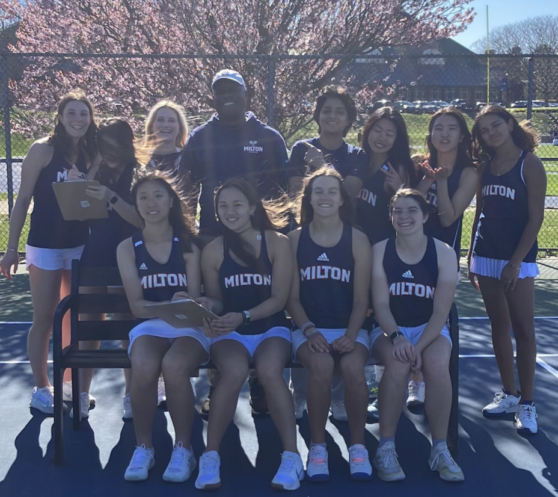
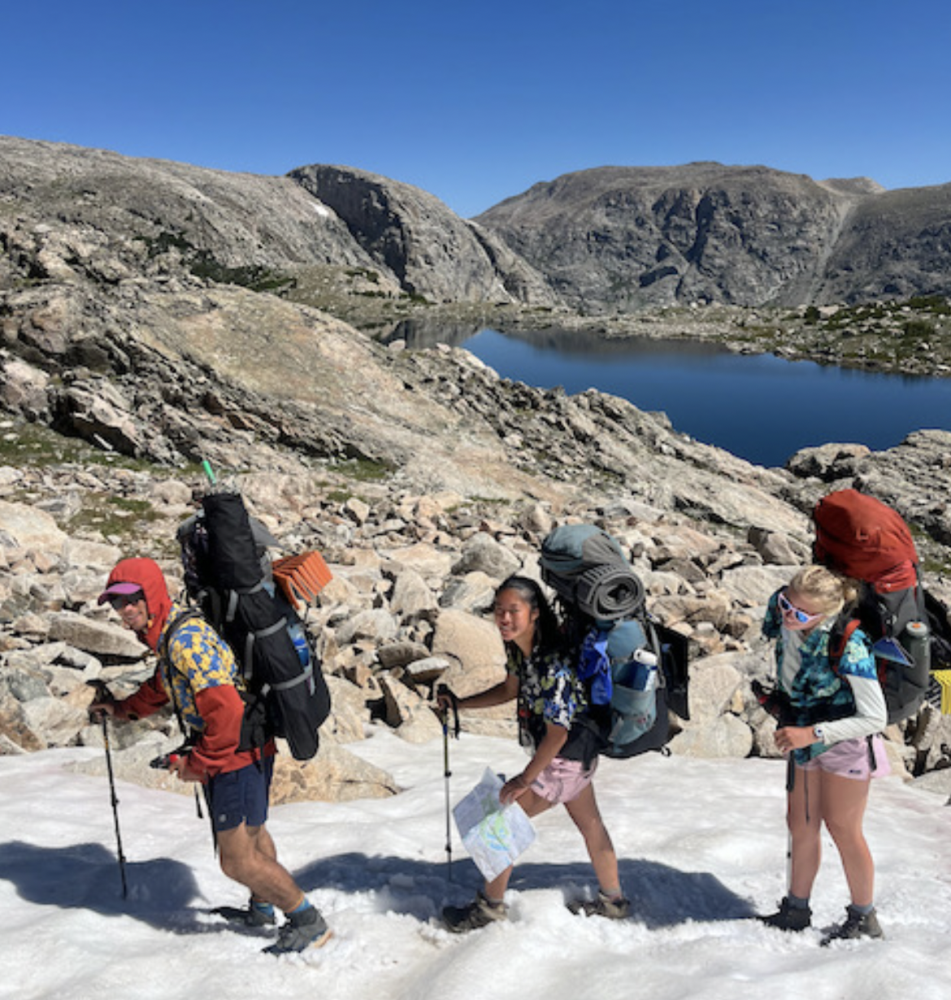

Here are some things and activities I really enjoy doing!

My favorite sport is tennis. I started around 3 years ago. I play on the Milton Girl's Varsity Tennis Team. I like to play both singles and doubles.
I really enjoy the outdoors. I like hiking, climbing mountains, and camping. I've also done other fun outdoors activities like rafting, ziplining, waterfall repelling, kayaking, and ice climbing